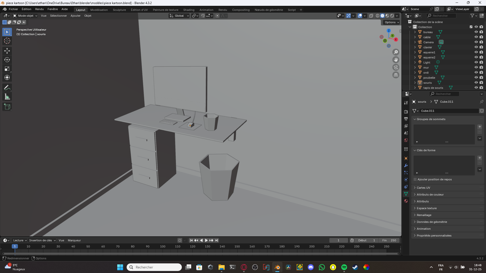

Les logiciels utilisés
Voici les logiciels que j'ai utilisés pour mes projets :
Blender

Blender est un logiciel de modélisation 3D open source très puissant. Il permet de créer des modèles 3D, des animations, des simulations physiques et même des jeux vidéo grâce au plugin Armory 3D. J'ai utilisé Blender pour créer des modèles 3D comme la Game Boy et le stylo que vous pouvez voir dans ma galerie de projets.

Voici une vue de l'éditeur Blender, avec un projet de pièce cozy cartoon ouvert.
Unity

Unity est un moteur de jeu très populaire qui permet de créer des jeux en 2D et en 3D. Il offre une interface très pratique, mais un peu difficile à prendre en main, ainsi que de nombreux outils pour le développement de jeux. J'ai utilisé Unity pour créer des jeux simples, comme le jeu du labyrinthe ou celui avec la boule, que vous pouvez trouver dans ma galerie de projets.

Voici une vue de l'éditeur Unity, avec le projet du jeu avec la boule ouvert.
Godot Engine

Godot Engine est un moteur de jeu open source permettant de créer des jeux en 2D et en 3D. Il offre une interface facile à prendre en main et de nombreux outils pour le développement de jeux. J'ai utilisé Godot pour créer un jeu simple, CrazyCube, mais aussi l'application pour réviser la physique-chimie.

Voici une vue de l'éditeur Godot, avec le projet CrazyCube ouvert.
IDLE Python

IDLE Python est l'éditeur de base pour créer des programmes Python. Il existe cependant de nombreuses façons de coder en Python (même avec le Bloc-notes 😅), par exemple avec VS Code, PyCharm, etc. J'ai utilisé Python pour créer des petits programmes simples ainsi que le premier prototype de l'application de révision du brevet.

Voici une vue de l'éditeur IDLE Python, avec le projet de l'application pour réviser le brevet ouvert.
| Comment ai-je découvert l'informatique ? | Galerie de mes projets |
|---|